Let’s benchmark use of lzstring for compression to base 64 and decompression from base 64. We will generate random strings of different lengths and measure the time taken for compression and decompression.
# Function to generate a random string of specified length
generate_random_string <- function(length) {
paste(sample(c(LETTERS, 0:9), size = length, replace = TRUE), collapse = "")
}
# Prepare a data frame to store benchmark results
benchmark_results <- data.frame(raw_len = numeric(), comp_len = numeric(),comp_time = numeric(), decomp_time = numeric())
# Run benchmark for each string length
for (i in 1:100) {
big_str <- generate_random_string(i * 100)
comp <- mark(
compressToBase64(big_str)
)
decomp <- mark(
decompressFromBase64(comp$result[[1]])
)
decomp_time_tmp <- as.numeric(decomp$median)
comp_time_tmp <- as.numeric(comp$median)
# Store the median time and string length
benchmark_results <- rbind(benchmark_results, data.frame(raw_len = nchar(big_str), comp_len = nchar(comp$result), comp_time = comp_time_tmp, decomp_time = decomp_time_tmp))
}
# Convert time to milliseconds
benchmark_results$comp_time <- benchmark_results$comp_time * 1000
benchmark_results$decomp_time <- benchmark_results$decomp_time * 1000Let’s plot the compression ratio for each string length. Compression ratio is the ratio between the length of the raw string to the length of the compressed string. These ratios are not good because the strings we’re producing are random and not very compressible, but they’re good for testing compression and decompression times.
benchmark_results$compression_ratio <- benchmark_results$raw_len / benchmark_results$comp_len
ggplot(benchmark_results) +
geom_line(aes(x = raw_len, y = compression_ratio)) +
labs(x = "String length (characters)",
y = "Compression Ratio") +
theme_minimal() +
theme(legend.position = "bottom")Now let’s plot the results for compression and decompression times of all those strings we created.
ggplot(benchmark_results) +
geom_line(aes(x = raw_len, y = comp_time, col = "Compression"), ) +
geom_line(aes(x = raw_len, y = decomp_time, col = "Decompression")) +
labs(x = "String length (characters)",
y = "Time (milliseconds)") +
theme_minimal() +
theme(legend.position = "bottom")